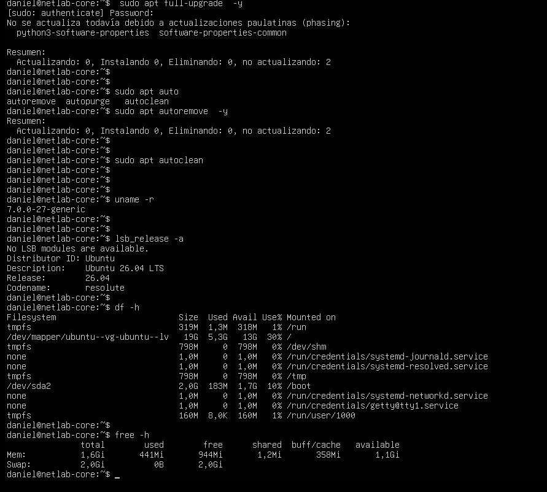
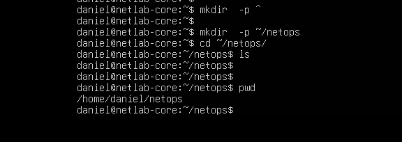
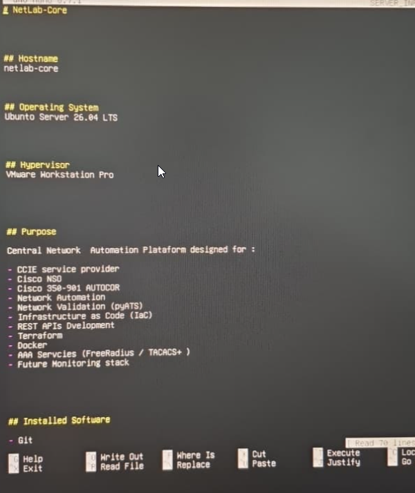
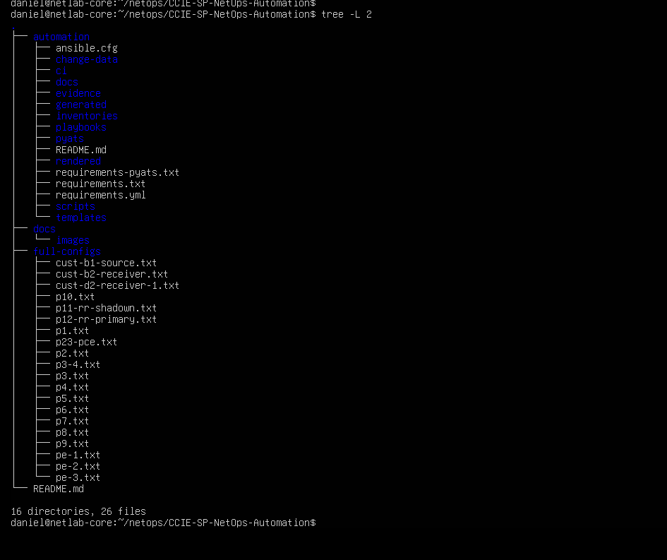

Building NetLab-Core: Ubuntu Golden Image for EVE-NG
A reusable Ubuntu 26.04 LTS automation server built in VMware Workstation, converted to QCOW2, and imported into EVE-NG for CCIE Service Provider labs.
Why I Built This Image
The goal was to create a reusable NetOps Core server for my EVE-NG Service Provider lab. Instead of reinstalling Ubuntu every time I need an automation host, this image becomes the baseline node for CCIE SP, Cisco NSO, Cisco 350-901 AUTOCOR, API testing, Ansible, pyATS, and future infrastructure services.
The final artifact lives in EVE-NG as a QCOW2 disk named
virtioa.qcow2. The staging path used during the build was:
C:\EVE\EVE-BACKLAB\qemu\linux-netlab-coreBefore You Start
This build is reproducible, but it needs a few basic pieces in place before starting. Treat this section as the minimum baseline for building your own EVE-NG automation host.
- Hypervisor: VMware Workstation or an equivalent virtualization platform.
- Installer: Ubuntu Server ISO. This build used Ubuntu Server 26.04 LTS.
- EVE-NG access: root or administrative access to copy images into
/opt/unetlab/addons/qemu. - Image conversion tools:
qemu-imgavailable on the EVE-NG host. - Recommended VM resources: 2 vCPU, 4 GB RAM, and a 40 GB virtual disk.
- Network mode: NAT or bridged networking during preparation, depending on the lab environment.
Target Architecture
NetLab-Core is designed as the central automation node that sits next to Cisco XR and Cisco XE routers inside EVE-NG. From this single server I can run automation, validation, AAA services, Docker workloads, and Python-based APIs against the lab topology.
Cisco XR
|
Cisco XE
|
netlab-core
|
+-------------+--------------+
| | |
Ansible FreeRADIUS Docker
| | |
Terraform TACACS+ Python APIsWhat I Want to Build This Week
I do not want this server to be only "Ubuntu with Python". The idea is to turn it into a real NetOps platform where Python, Ansible, pyATS, templates, parsers, and network devices are connected as one workflow.
NetLab-Core
|
+----------------+----------------+
| | |
Python Ansible pyATS
| | |
+------+ | +------+
| | | |
Netmiko Scrapli Jinja2 Genie
|
|
IOS-XR
IOS-XE
JunOS
NokiaThe current CCIE SP lab is Cisco-focused, but the platform design leaves room for future multi-vendor validation and automation practice.
Versions and Build Context
- Guest OS: Ubuntu Server 26.04 LTS.
- Kernel observed: 7.0.0-27-generic.
- Hypervisor used for preparation: VMware Workstation 25H2.
- Initial VM resources: 2 vCPU, 4096 MB RAM, 40 GB virtual disk, NAT networking.
- EVE-NG host: 192.168.1.100.
- EVE-NG QEMU runtime observed: qemu-system-x86_64 6.0.0 for the node.
- Final EVE disk:
/opt/unetlab/addons/qemu/linux-netlab-core/virtioa.qcow2.
Build Scope
It is important to separate what was built, what is already installed, and what belongs to the next phase. That keeps the article clear for anyone who wants to reproduce the same Golden Image.
What I Built
A reusable Ubuntu 26.04 LTS Golden Image for EVE-NG, prepared first in VMware and imported as virtioa.qcow2.
Already Installed
Git, Python 3.14, venv, pip, Ansible, pyATS, Genie, Linux tools, and the CCIE-SP-NetOps-Automation repository.
Planned Next
Docker, FRRouting, FreeRADIUS, TACACS+, Terraform, NetBox, Grafana, Prometheus, and VS Code Server.
1. Prepare Ubuntu in VMware
I started with a clean Ubuntu Server VM in VMware Workstation. This allowed me to build and validate the image comfortably before importing it into EVE-NG. VMware was used as the build environment; EVE-NG is the final runtime.
sudo apt update
sudo apt upgrade -y
sudo reboot
sudo apt full-upgrade -y
sudo apt autoremove -y
sudo apt autocleanAfter the update, I validated the OS, kernel, disk layout, and memory. This is the point where the VM stopped being a fresh install and started becoming a controlled lab appliance.

2. Install Core NetOps Tooling
The base image includes tools that are useful from day one in a network automation lab. They support troubleshooting, API testing, packet capture, terminal workflows, and day-to-day Linux operations.
sudo apt install -y \
vim \
curl \
wget \
htop \
tmux \
net-tools \
dnsutils \
iputils-ping \
tcpdump \
jq \
unzip \
zip- curl and jq support REST API testing and JSON inspection.
- tcpdump, ping, mtr, and net-tools support network troubleshooting.
- tmux keeps long-running sessions alive.
- vim, unzip, zip, and htop are everyday operational tools that belong on the server from day one.
Golden Image Package Plan
The long-term goal is to keep this image as a reusable automation appliance. The first release focuses on the foundation; future snapshots can add heavier services without rebuilding the operating system from zero.
Base System
Python 3, pip, Git, curl, vim, htop, net-tools, tcpdump, iperf3, mtr, jq, unzip, and zip.
Automation
Ansible, pyATS, Genie, Jinja2, PyYAML, Requests, Scapy, and project-specific Python libraries.
Routing Services
FRRouting planned for BGP, OSPF, and RIP protocol experiments inside the lab.
Optional Platform
Docker as the base for NetBox, monitoring tools, API services, AAA components, and future lab utilities.
3. Create the NetOps Workspace
The working directory inside the server is intentionally simple:
/home/daniel/netops. This keeps automation repositories,
lab notes, generated artifacts, and validation tools under one predictable
workspace.
mkdir -p ~/netops
cd ~/netops
pwd
/home/daniel/netops.4. Configure Git
Git was configured before cloning the automation repository. This makes the VM ready for commits, documentation updates, branches, and future CI/CD work.
git config --global user.name "Daniel Fonque"
git config --global user.email "danielfonque@gmail.com"
git config --global init.defaultBranch main
git config --global core.editor vim
git config --global pull.rebase false
git config --listServer Documentation
A server like this should be self-documented. Many engineers build systems,
but fewer document why the system exists, what is installed, and how it should
be used later. The file SERVER_INFO.md becomes the first internal
design note for NetLab-Core.
cd ~
mkdir -p Documentation
cd Documentation
touch SERVER_INFO.md
nano SERVER_INFO.md# NetLab-Core
## Hostname
netlab-core
## Operating System
Ubuntu Server 26.04 LTS
## Hypervisor
VMware Workstation Pro
## Purpose
Central Automation Server for:
- CCIE Service Provider
- Cisco NSO
- Cisco AUTOCOR
- Ansible
- pyATS
- Python Automation
- REST APIs
- Terraform
- Docker
- FreeRADIUS
- TACACS+
- Future Monitoring Stack
## Installed
- Git
- Python 3.14
- pip
- venv
- Ansible Core
- pyATS
- Genie
- Jinja2
- PyYAML
- Requests
- curl
- jq
- tcpdump
- tmux
- htop
## Git Repository
CCIE-SP-NetOps-Automation
This is the small detail that makes the server feel intentional. Six months later, this file explains what was installed, why Ubuntu 26.04 was chosen, what the server is for, and which repository belongs to the lab. It turns a personal build into something closer to an engineering platform.
One-Afternoon Progress Summary
In one build session, the VM moved from a clean Ubuntu install to a real NetOps Server.
- Ubuntu Server 26.04 LTS.
- Initial recovery snapshot.
- DNS working.
- Git configured.
- Python 3.14.
- Virtual Environment (venv).
- pip upgraded.
- GitHub project cloned.
- Project dependencies installed.
- pyATS installed.
- Genie installed.
- Ansible installed.
- Basic Linux tools installed.
At this point it was no longer a fresh Ubuntu server. It had become the first version of the NetLab-Core automation platform.
5. Deploy the Automation Repository
The automation repository was not a generic sample project. It was my own CCIE SP automation repository, built specifically to support the lab work I am preparing and documenting: dfonquet/CCIE-SP-NetOps-Automation.
I cloned it into the NetOps workspace so NetLab-Core could become the place where the lab is automated, validated, documented, and improved over time. The structure is intentionally separated by function: change data, templates, playbooks, pyATS validation, rendered configuration, generated facts, and evidence.
cd ~/netops
git clone https://github.com/dfonquet/CCIE-SP-NetOps-Automation.git
cd CCIE-SP-NetOps-AutomationThe workflow follows a clean engineering model: data -> render -> dry-run -> deploy -> validate -> evidence.

6. Python Virtual Environment
I used a Python virtual environment so that project dependencies do not pollute the global operating system. This matters in a long-lived lab appliance because different automation projects may require different versions of libraries.
python3 -m venv .venv
source .venv/bin/activate
python -m pip install --upgrade pip
pip install -r automation/requirements.txt
python -c "import yaml, requests, pyats; print('Dependencies OK')"
During the build, Python packages that compile native extensions required
build-essential and python3-dev. That became a useful
reminder: when pip fails while building wheels, the issue is often
a missing compiler or missing Python development headers.
7. Installed Automation Stack
Ansible
Used for repeatable configuration workflows, rendering, deployment, and validation tasks.
pyATS and Genie
Used to validate network state, parse CLI output, and build test-driven lab checks.
Python APIs
Used for REST calls, structured data workflows, and custom automation scripts.
Future Services
Docker, FreeRADIUS, TACACS+, Terraform, NetBox, Grafana, and Prometheus.
8. Convert the VMware Disk for EVE-NG
The VMware VM was built as the development source, then exported as an independent VMDK so the original VMware VM and snapshots remained untouched. The resulting image was staged in:
C:\EVE\EVE-BACKLAB\qemu\linux-netlab-core\NetLab-Core.vmdk
After copying the VMDK to EVE-NG, it was converted to QCOW2 using
qemu-img.
cd /opt/unetlab/addons/qemu/linux-netlab-core
qemu-img convert -f vmdk -O qcow2 NetLab-Core.vmdk virtioa.qcow2
/opt/unetlab/wrappers/unl_wrapper -a fixpermissions9. EVE-NG Node Settings
- Image folder:
linux-netlab-core. - Disk filename:
virtioa.qcow2. - Console: VNC.
- CPU: 2 vCPU.
- RAM: 4096 MB recommended for automation tooling.
- NIC: virtio-net-pci.
- Boot order: disk first,
-boot order=c.
The imported node became NetLab-Core-01 in the CCIE SP lab. Once the QCOW2 image booted, the original workspace and repository were still present, which confirmed that the migration preserved the build state.
EVE-NG: The Fun Part
This is where the project starts to feel alive. NetLab-Core is not meant to appear in EVE-NG as just another node named Ubuntu. The idea is for it to appear as NetLab-Core, or even NetOps Automation Server, because its role is different from a normal test VM.
EVE-NG
IOS-XR
|
IOS-XE
|
NetLab-Core
|
Ansible
pyATS
Python
GitFrom this server I can run playbooks, validations, backups, REST API tests, and configuration generation from inside the lab itself. The automation host lives next to the routers it manages, which makes the lab feel much closer to a real operations environment.
ISP
P1---------P2
| |
PE1---------PE2
| |
XR CE XE CE
|
|
NetLab-CoreThat node becomes the brain of the lab. It configures routers, validates state, compares configurations, generates templates, runs pre-change and post-change checks, and queries APIs. It is not just a PC connected to the topology; it is the operational control point for the whole environment.
Simple EVE-NG Import Fix
After moving the converted QCOW2 image into EVE-NG, the disk itself was valid, but the first node start did not behave correctly. The wrapper reported that the QEMU child process was no longer running. In simple terms, the image was good, but the EVE-NG node runtime was prepared incorrectly.
The clean fix was to regenerate the node runtime, force the node to boot from disk, and repair permissions again.
/opt/unetlab/wrappers/unl_wrapper -a fixpermissions
/opt/unetlab/wrappers/unl_wrapper -a wipe -T 0 -F /opt/unetlab/labs/CCIE-SP-LB.unl -D 3
/opt/unetlab/wrappers/unl_wrapper -a start -T 0 -F /opt/unetlab/labs/CCIE-SP-LB.unl -D 3
After that, NetLab-Core-01 booted correctly inside EVE-NG and
the original /home/daniel/netops workspace was still present.
Key Takeaways
- A Golden Image saves time when the same automation server is needed across many EVE-NG labs.
- VMware is useful for preparing the server, but QCOW2 is the clean runtime format for EVE-NG.
- Keeping the VMware VM as a development source protects the original snapshots and build history.
- The server should be documented from day one with files such as
SERVER_INFO.md. - A good NetOps lab is not only routers and protocols; it also needs repeatable tooling, validation, evidence, and recovery points.
Roadmap
The current image already covers the core automation foundation. The next phase is to grow it into a complete Network Automation Platform.
- Docker and Docker Compose.
- FRRouting for routing experiments and protocol testing.
- FreeRADIUS and TACACS+ for AAA labs.
- Terraform for infrastructure workflows.
- NetBox as source of truth.
- Grafana, Prometheus, and future telemetry integrations.
- VS Code Server for browser-based development inside the lab.
Who This Is For
This guide is for network engineers building an EVE-NG automation host for CCIE Service Provider practice, repeatable lab operations, Ansible workflows, pyATS validation, Python tooling, and future NetDevOps services.
It is especially useful if you want a lab server that can grow with you: starting as a clean automation node, then becoming a central platform for configuration generation, testing, validation, AAA, source-of-truth systems, telemetry, and operational evidence.
Living Note
This post is a living document. I will update it as I run more tests with NetLab-Core inside EVE-NG, add new services, validate more automation workflows, and improve the Golden Image based on real CCIE SP lab usage.
The goal is not only to document the first successful build, but to keep a practical record of how the server evolves as the lab becomes more complete.
NetLab-Core is not just an Ubuntu VM. It is the automation control plane for the lab: the place where configuration intent, validation, evidence, and future infrastructure services come together.
Comments & Discussion
If you are building a similar EVE-NG automation node, feel free to leave a comment with your image strategy, package set, or NetDevOps workflow.